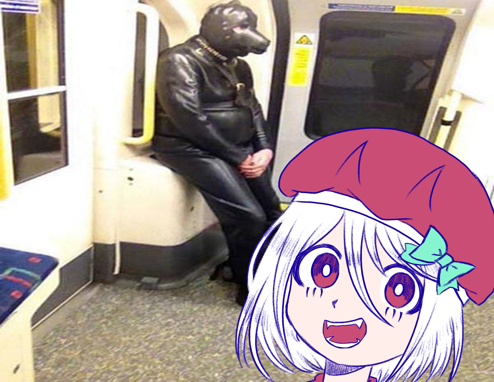
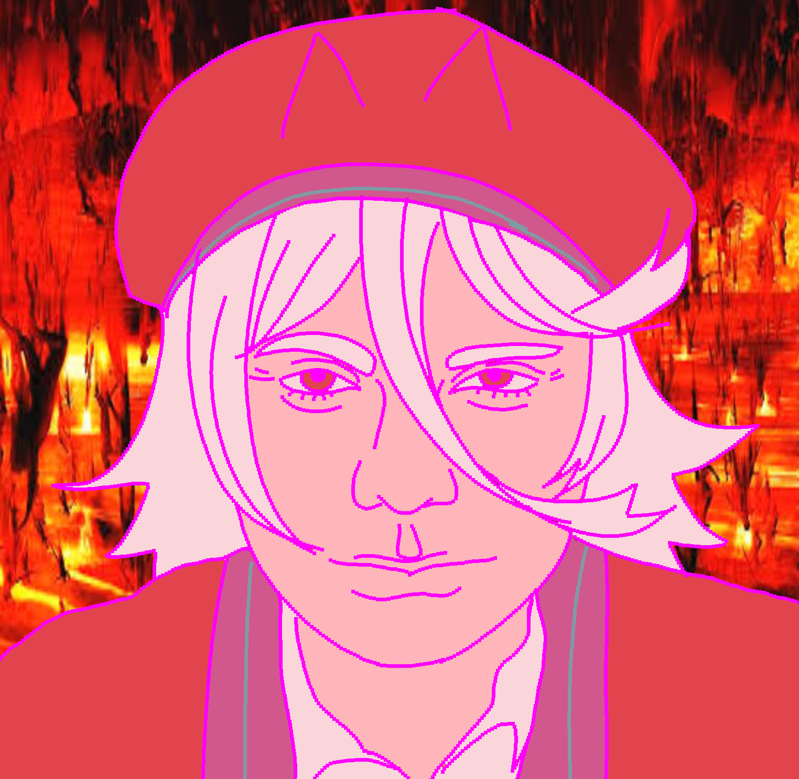
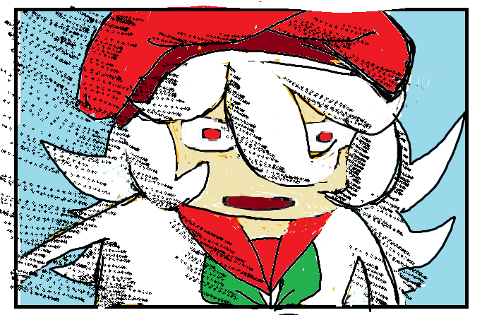
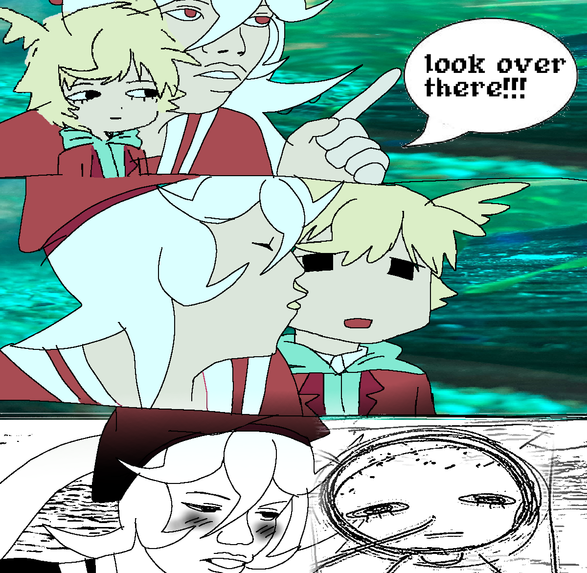
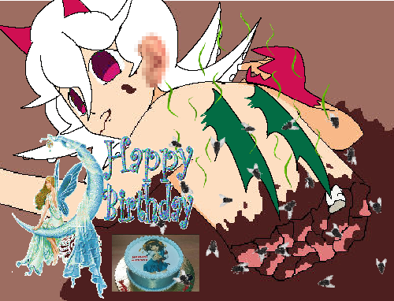
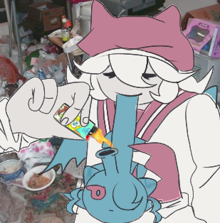
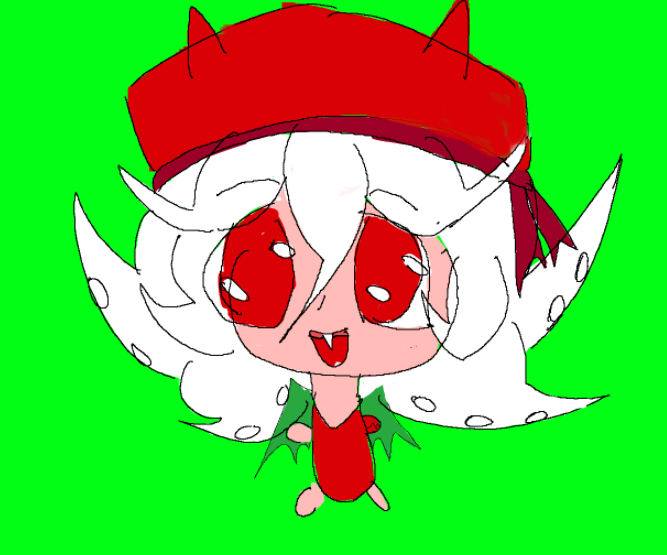
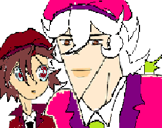

Glizzy tan
Capítulos
Capitulo 1 Capitulo 2 Capitulo 3 Capitulo 4 Capitulo 5 Capitulo 6 Capitulo 7 Capitulo 8 Capitulo 9Capitulo 1: La travesía del Uncle Pablo
Los papás de Glizzy Tan se van de vacaciones y llaman al Uncle Pablo para que cuide de Stendra y Glizzy Tan. Sin embargo, él emprende una travesía junto a Glizzy para conocer a la Discord kitten del Uncle Pablo, dejando a Stendra sola en casa.

Capitulo 2: La protesta de Glizzy-tan
Glizzy-tan descubre que venden cangrejos y pulpos en Walmart. A partir de ahí, comienza una protesta radical que la lleva a extremos autoritarios y logra que pongan carne humana en la sección de carnes de la tienda. Al final, hay una moraleja extraña, pero el producto sigue vendiéndose ahí.

Capitulo 3 : Parodia del Joker
Un episodio donde se hace una parodia del Joker, súper depresiva y dramática, con situaciones muy pesadas que no tienen nada que ver con el estilo de la serie. En episodios posteriores, todos se olvidan de lo ocurrido y no hay ninguna repercusión.

Capitulo 4: El regalo para Lázaro
Episodio donde Lázaro, el interés amoroso de Glizzy-tan, es introducido mencionando que le gusta la anatomía humana. Teniendo esto en mente, Glizzy-tan le quita un riñón a Eina para regalárselo a Lázaro.

Capitulo 5: Glizzy va a la playa
Glizzy-tan va a la playa, se aburre y se ofende por las actividades que realizan los humanos en ella. Termina en piezas por el cartel.

Capitulo 6: Glizzy se vuelve drogadicta
Glizzy-tan cae en las adicciones y tiene un viaje alucinante. Todo el capítulo carece de sentido mientras sus amigos intentan hacer que regrese a la normalidad. Al final, se revela que todo era un sueño dentro de un sueño dentro de un sueño.

Capitulo 7: Glizzy, la acosadora
Stendra va a la escuela mientras Glizzy-tan es confundida con una acosadora por vigilar de cerca a Stendra para asegurarse de que esté bien en sus clases.

Capitulo 8: La pubertad de Glizzy
A Glizzy-tan le llega la «pubertad» y se convierte en un cangrejo realista, al estilo de Tío Grandpa. Al final del proceso, la esterilizan y le ponen un cono de la vergüenza.

Capitulo 9: Episodio de Navidad
Un episodio navideño súper feliz. Es el primer primer navidad de Stendra y Cthulhu tiene que comprar le un regalo de navidad. Mientras en la trama secundaria es sobre la vida terrible de Eina. Sus papás se divorcian exactamente en Navidad.